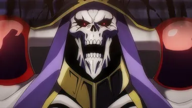
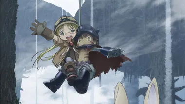
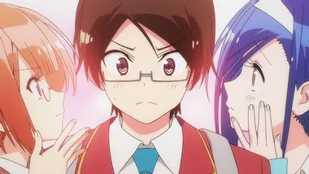
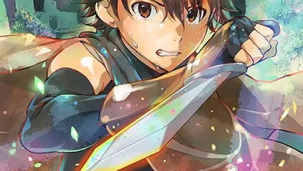
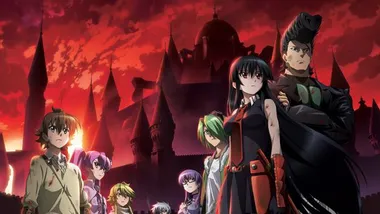
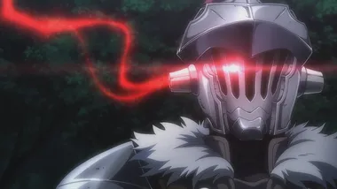
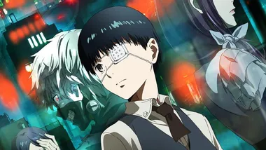
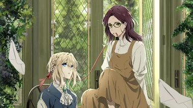
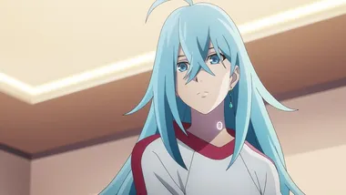

AniMaGa

오버로드 1기
배경은 2138년으로, 21세기 말기부터 심각해진 환경오염은 극에 달해 전세계는 검은 스모그에 뒤덮히고 태양을 보는 일조차 극히 드물게 되었다. 당연히 농경도 축산업도 불가능해지면서 덮쳐온 식량난으로 혼란이 일어나며 22세기 초에 국가 지도부는 붕괴, 그 틈에 대기업들이 손을 뻗어 나라를 실효지배하는 시스템이 완성된 기업국가가 되었다. 일본의 수도는 네오 교토이며 중국은 더이상 한 국가로 유지되지 못하고 분열한 상태. 유럽에서는 네오 나치 세력이 대두하기도 하였다.

메이드 인 어비스
수수께끼가 가득한 빅홀 어비스. 그 안에는 온갖 기묘하고 기괴한 생물들이 살고 있으며, 현 인류로서는 만들어낼 수 없는 귀중한 유물들이 잠들어 있다. 많은 사람들이 어비스에 매료되어 어비스에 모험을 떠난다. 이들을 탐굴가라고 부른다. 어머니처럼 위대한 탐굴가가 되고 싶어하는 벨 체로 보육원의 소녀 리코는 어비스의 수수께끼를 풀고자 깊숙히 들어가길 원한다.
평소와 같이 아이들과 함께 탐굴하러 간 어느날 리코는 소년의 모습을 한 로봇을 줍는다. 리코는 그 로봇에게 레그라는 이름을 붙여준다. 그로부터 얼마뒤 어비스에서 발견된 리코의 어머니의 물품들이 지상으로 올라온다. 리코는 어머니의 물품을 구경하다가 어느 한 메시지를 발견한다. 그 메시지에는 '나락의 끝에서 기다린다'라는 문구가 써져 있었다.
리코는 레그와 함께 자신의 어머니를 찾기 위해 어비스의 맨 아래 나락의 끝으로 향하는데…
코바야시네 메이드래곤
밤늦게까지 일하고 왔을 때,
메이드가 있었으면 좋겠다고 생각합니다.
고되고 고된 일을 끝내고 귀가하니 어느덧 밤이 되었습니다.
난방을 떼지 않아 싸늘한 방, 텅 비어있는 밥솥, 깜박 잊고 시작버튼을 누르지 않은 세탁기……
이러면 정말 집에 돌아와도 돌아온 기분이 들지 않습니다. 이럴 때는 메이드가 있었으면 합니다.
누군가 나를 위해 따뜻한 밥 한 공기를 차려주면, 그것만으로도 불끈 기운이 솟아오릅니다.
그러던 어느 날, 냥줍도 아닌 용줍을 해버린 고바야시 씨에게 드래곤인 메이드 토르가 찾아왔습니다.
막강한 힘을 자랑하는 드래곤이 어째서 하찮은 인간의 메이드가 되었을까요?
고바야시와 토르의 알콩♡ 달콩♡ 살벌(?)한 이야기가 지금 시작합니다!
청춘 돼지는 바니걸 선배의 꿈을 꾸지 않는다
도서관에 바니걸은 서식하지 않는다.
그 상식을 깨듯, 아즈사가와 사쿠타는 야생의 바니걸과 만났다.
게다가 그녀는 평범한 바니걸이 아니었다.
사쿠타가 다니는 고등학교의 선배이자, 활동 중지중인 인기 탤런트 사쿠라지마 마이였다. 며칠 전부터 그녀의 모습이 『주위 사람들에게 보이지 않는다』고 하는 현상이 일어났고, 그녀는 도서관에서 그걸 검증하고 있었다고 한다.
이것은 인터넷상에서 화제가 되고 있는 불가사의 현상 『사춘기 증후군』과 관계가 있는 걸까. 그 원인을 찾는다는 이유로 마이와 가까워진 사쿠타는 이 수수께끼를 풀려고 한다.
하지만 사태는 생각지도 못한 방향으로 나아가는데─?
하늘과 바다로 둘러싸인 마을에서, 나와 그녀의 사랑에 얽힌 이야기가 시작된다.
『사쿠라장의 애완 그녀』 콤비가 전해드리는 새로운 청춘 스토리.

우리는 공부를 못해
찢어지게 가난한 집안 환경과 동생들을 위해 전액 무료 VIP 대학 추천을 노리는 고교 3학년 유이가 나리유키. 내 공부도 하기 바쁜 판에 본의 아니게 천재 미소녀 후미노와 리즈의 교육을 맡게 된다. 완전무결해 보이는 두 사람이지만 사실 의외의 고민을 안고 있었는데…?!
카구야 님은 고백받고 싶어
똑똑한 데다 외모 또한 발군인 두 명의 고등학생 남녀가 있다. 둘은 서로를 좋아하지만 자존심이 드높은 탓에, 먼저 고백받기 위한 두뇌 싸움을 벌이기 시작한다!
하지만 허점투성이의 그들은 매번 삽질만 하고. 과연, 이 밀당 싸움의 최종 승자는 누구인가? 사랑에 승자란 존재하는 것인가?!

재와 환상의 그림갈
하루히로는 정신이 들어보니 어둠 속에 있었다.
어째서 이런 곳에 있는 건지, 여기가 어디인지 모르는 채로.
주위에는 마찬가지로 이름 정도밖에 기억하지 못하는 남녀.
그리고 지하에서 나오자 기다리고 있던 마치 '게임 같은' 세계.
살아가기 위해 하루히로는 같은 처지에 놓인 동료들과 팀을 짜고 스킬을 익혀, 의용병 수습생으로서 이쪽 세계 '그림갈'을 향해 한 걸음 내딛는다. 그 앞에 무엇이 기다리고 있는지도 모르는 채.
이것은 재 속에서 생겨난 모험담.

아카메가 벤다!
인간이 점차 썩어가듯이 나라도 언젠가는 멸망한다. 천 년간 번창했던 제도조차도 지금은 부패해 생지옥. 인간의 형상을 한 이매망량이 내 윗사람으로서 발호한다.
하늘이 벌하지 않는 그 악을 어둠 속에서 처리한다. 우리들 전원, 암살자다.

고블린 슬레이어
“나는 세상을 구하지 않아. 고블린들을 죽일 뿐이다.”
그 변경의 길드에는 고블린 토벌만 해서 은 등급까지 올라간 희귀한 모험가가 있다…….
모험가가 되어 처음 짠 파티가 괴멸하고 위기에 빠진 여신관.
그때 그녀를 구해준 자가 바로 고블린 슬레이어라 불리는 남자였다.
그는 수단을 가리지 않고, 수고도 마다치 않으며 고블린만을 퇴치한다.
그런 그에게 여신관은 휘둘려 다니고, 접수원 아가씨는 감사하며, 소꿉친구인 소치기 소녀는 기다린다.
그런 가운데 그의 소문을 듣고서 숲 종족 소녀가 의뢰를 하러 나타났다─.
압도적 인기의 Web 작품이 드디어 서적화!
카규 쿠모 × 칸나츠키 노보루가 선물하는 다크 판타지, 개막!

도쿄구울
인간의 시체를 먹는 괴인 '구울'이 도사리고 있는 거리 도쿄. 대학생 카네키는 한 사고로 인해
구울의 내장을 이식받아 반구울이 된다. 인간을 먹어야 살지만, 인간을 먹고 싶지는 않다. 인간과 구울 사이에서 발버둥치며,
괴로워하는 카네키. 어느 세계에도 속해있을 수 없는 그를 받아준 것은 구울 '요시무라'가 경영하는 카페 '안테이크'였다.
그리고 카네키는 스스로 구울과 인간, 두 세계에 거처를 가진 유일한 존재임을 알게된다. 서로가 왜곡한 세계를 바로잡기 위해
카네키는 구울과 인간의 마음이 엇갈리는 미궁으로 들어가는데...

바이올렛 에버가든
2그 이름이 입에 오르내리던 것은 이미 오래 전부터의 일.
올랑드 박사가 사람의 목소리를 받아적는 기계를 만들었다.
처음엔 사랑하는 아내를 위해 만들었던 기계였지만
언제부턴가 세계에 보급되고 그것을 대출·제공하는 기관도 생겼다.
「고객님이 원하신다면 어디든 달려가겠습니다.
자동 수기 인형 서비스[4] 바이올렛 에버가든입니다.」
이야기책에서 튀어나온 것 같은 모습에 금발 벽안을 가진 여자는
무기질의 아름다움 그대로 영롱한 목소리로 그렇게 말했다

Vivy Fluorite Eye's Song
노래로 모두를 행복하게 해주기 위해.
'니아랜드' 그곳은 꿈과 희망과 과학이 뒤섞인 AI 복합 테마파크.
사상 최초의 인간형 자율 AI로 만들어져 시설의 AI 캐스트로서 활동하는 비비는 매일 노래하기 위해
계속해서 무대에 올랐다. 하지만 사람들에게 인기는 없었다.
'노래로 모두를 행복하게 해주는 것'.
자신이 부여받은 그 사명을 완수하기 위해 언젠가 마음이 담긴 노래를 불러서
언젠가 파크 안에 있는 메인 스테이지에 오르는 것을 목표로 노래를 계속하는 비비.
어느 날 그런 비비의 앞에 마츠모토라고 자신을 소개한 AI가 나타난다.
마츠모토는 자신이 100년 후의 미래에서 온 AI라고 말하고 그의 사명이 '비비와 함께 역사를 수정하고
100년 후의 일어날 AI와 인간의 전쟁을 막는 것'이라고 밝힌다.
과연 서로 다른 사명을 가진 두 AI의 만남은 미래를 어떻게 다시 그려낼 것인가.
이것은 내(비비)가 나(AI)를 멸하는 이야기 비비의 백 년 여행이 시작된다....